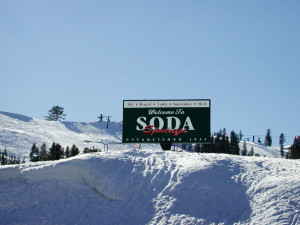

Soda Springs, Idaho – Curiosity on the Oregon Trail – Legends of America
Located along a shortcut on the Oregon-California Trail off of the main route to Fort Hall, Idaho is Soda Springs.
These natural bubbling pools of carbonated water, caused by ancient volcanic activity, were first called Beer Springs.
Visited by local Indians, fur traders, and trappers prior to the days of the Oregon Trail emigrations, the springs were
rightfully considered to be one of the marvels of the overland trails.At the time that pioneers were headed west for California and Oregon,
there was an abundance of springs and water in the area and the area became known as the Oregon Trail Oasis.
Emigrants frequently took advantage of the hot water to wash clothes, bathing, and medicinal purposes, often noting the picturesque scenery
of the area and the smell that came from the springs. On July 24, 1838, Sarah White Smith stated:Traveled… along the bank of the Bear River &
are encamped at Soda Springs. This is indeed a curiosity. The water tastes like soda water, especially artificially prepared.
The water is bubbling and foaming like boiling water. I drank of it… We find it excellent for baking bread, no preparation of water is necessary.
Take it from the fountain & the bread is as light as any prepared with yeast.The development of the town of Soda Springs and the building of
Alexander Reservoir has destroyed or covered many of these historic springs; however, Steamboat Spring, Wagonbox Grave, Hooper Spring, Octagon Spring,
and two short traces of ruts can still be seen in the area.
In Hooper Springs Park, visitors can sample the carbonated water just as westward-bound travelers did some 160 years ago.
Soda Springs is also the home of the worlds largest man-made geyser. The geyser was created in 1937 when engineers were attempting to find a
hot water source for a swimming pool. On November 30, 1937, the drill went down 315 feet and unleashed the geyser. The extreme pressure.
caused by carbon dioxide gas mixing with water in an underground chamber, caused water to shoot 100 feet into the sky. It is now capped and
controlled by a timer and erupts every hour on the hour. It is the only captive geyser in the world.Another interesting site is the Wagon Box Grave in Fairview Cemetery.
In the summer of 1861, a family of seven on their way to Oregon was camped in the vicinity of Soda Creek and the Bear River.
Their horses had strayed and the family fell behind the main part of the wagon train to search for them. Sometime during the night, they were killed by Indians.
The bodies were found the next morning by members of the larger party. One man, George Goodheart, related their burial as follows:We then covered them all up with quilts,
and took the upper sideboards and sawed them so they would fit across the wagon box. We put some across over the old Folks faces and some over the childrens faces at the foot.
Then we got some willows from Soda Creek and cut them so as to cover the whole length of the wagon box. We then spread quilts over them, covered them with dirt,
and set four formation rocks, one at each corner.©Kathy Weiser/Legends of America, updated February 2020.
Also See:California TrailIdaho – The Gem StateOregon TrailOregon-California Trail TimelineSources:History GlobeNational Park ServiceSoda Springs, Idaho